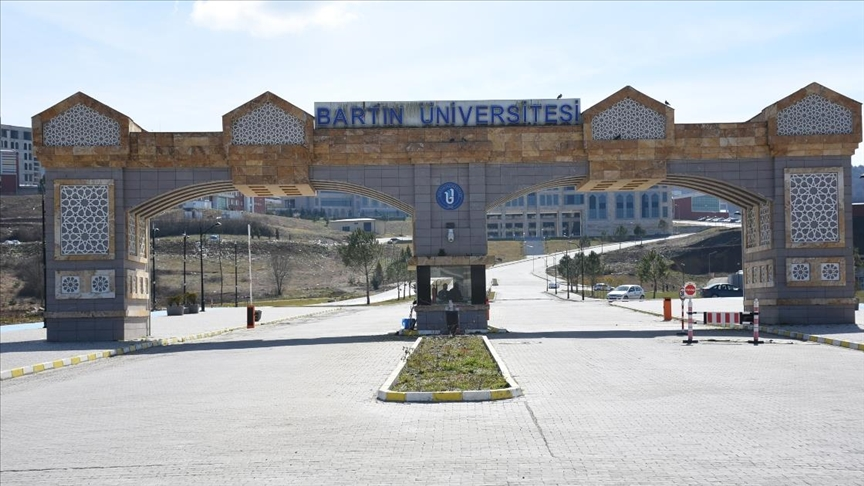

على الرغم من أن مدينة بارتين كان لديها جامعتها الخاصة منذ 12 عامًا ، إلا أن تاريخ جامعة المدينة يعود إلى التسعينيات. كانت كلية بارتين للغابات ، التي تم إنشاؤها باعتبارها تابعة لجامعة Zonguldak Karaelmas بموجب القانون رقم 3837 بتاريخ 11.07.1992 ، أول كلية تأسست في بارتين. بدأت كلية بارتن للغابات ، التي تأسست في الحرم الجامعي اداجي ، حياتها التعليمية من خلال استقبال طلابها الأوائل في العام الدراسي 93-94. مع بدء التعليم في كلية بارتين للغابات ، تم تضمين 3 وحدات أكاديمية أخرى في مجال التعليم العالي في بارتين. هذه هي: مدرسة بارتين المهنية ، والمدرسة المهنية للخدمات الصحية ، ومدرسة التربية البدنية والرياضة
في عام 2008 ، مع إنشاء جامعات المدينة في جميع أنحاء البلاد ، اكتسبت مدينة بارتين جامعتها الخاصة. قبلت جامعة بارتن ، التي تأسست بموجب القانون رقم 5765 بتاريخ 22 مايو 2008 ، طلابها الأوائل في كلية الاقتصاد والعلوم الإدارية المنشأة حديثًا ، وكلية الهندسة ، ومعهد العلوم الاجتماعية وكلية الدراسات العليا للعلوم ، وكذلك فصل 4 وحدات أكاديمية عن جامعة Zonguldak Karaelmas. بدأت جامعة بارتن في تدريب الطلاب الذين يهدفون إلى أن يكون لهم رأي في المستقبل بإجمالي 3 كليات ومعهدين وكليتين مهنيتين وكلية ، وتواصل تطويرها من أجل تلبية احتياجات بلدنا.
نظرًا لأن حرم Ağdacı ، الذي استلمته جامعة بارتين من جامعة Zonguldak Karaelmas ، لم يستطع الاستجابة فعليًا للكليات والأقسام الجديدة ، نشأت الحاجة إلى حرم جامعي جديد. نتيجة لبحث طويل ودقيق ، في 26 أغسطس 2009 ، تم تحديد مساحة 1،171،032.22 متر مربع ، وتقع داخل حدود قريتي Kutlubey-Yazıcılar و Esenyurt على الطريق السريع Bartın-Zonguldak ، كحرم جامعي.
استمرت جامعة بارتن ، التي تطورت علميًا وجسديًا في وقت قصير ، في زيادة عدد الكليات. كلية التربية والآداب عام 2010 ، وكلية العلوم عام 2011 ، ومعهد العلوم التربوية وكلية العلوم الإسلامية عام 2012 ، ومدرسة أولوس المهنية عام 2017 ، وكلية اللغات الأجنبية وكلية العلوم الصحية عام 2018 ، وكلية علوم الرياضة عام 2019 على التوالي. بالقرار الرئاسي رقم 1157 المنشور في الجريدة الرسمية رقم 30812 بتاريخ 25 يونيو 2019 ، تم تغيير اسم كلية الهندسة ، التابعة لمديرية جامعة بارتين ، إلى كلية الهندسة والعمارة والتصميم. بالإضافة إلى ذلك ، بقرار رئيس الجمهورية بتاريخ 15 يونيو 2020 ورقم 2654 ، تم تجميع المعاهد تحت سقف واحد وسميت بمعهد التعليم العالي.
اليوم ، تضم جامعة بارتن ، التي تضم 9 كليات و 3 مدارس مهنية وكلية واحدة ومعهد واحد ، أكثر من 18 ألف طالب. وجدت جامعة بارتن ، التي تعد من الجامعات الواعدة بفضل الأهمية التي توليها للتعليم الجيد والبنية التحتية العلمية ، نفسها في مكانة محترمة على الرغم من تاريخها الممتد 12 عامًا. تواصل جامعة بارتن ، الحاصلة على حق التخصص في مجال "اللوجيستيات الذكية وتطبيقات المنطقة المتكاملة" ضمن نطاق "مشروع التمايز والتخصص الموجه نحو التنمية الإقليمية" ، والذي توليه جامعة يوك أهمية كبيرة ، إضافة قيمة إلى بلدنا انطلاقا من منطقته.
التخصصات
كلية الغابات
هندسة الغابات الصناعية
هندسة الغابات
كلية الآداب
الاثار
إدارة المعلومات و الوثائق
الفلسفة
الترجمة(الانجليزية)
علم النفس
علم الاجتماع
تاريخ الفن
التاريخ
اللغة التركية و آدابها
الآداب التركي المعاصر و لهجاتهُ
كلية التعليم
الارشاد النفسي
الفنون الجميلة
معلم الرياضيات للمرحلة الابتدائية
معلم علوم
معلم لغة التركية
معلم الإجتماعية
معلم اللغة الانجليزية
كلية العلوم
تكنولوجيا الحاسب و نظم معلومات
التكنلوجيا الحيوية
الرياضيات
علم الوراثة
كلية الهندسة
هندسة الحاسوب
هندسة الكهرباء و الإلكترون
الهندسة مدنية
الهندسة الميكانيكية
كلية العلوم الصحية
التمريض
الخدمات الإجتماعية
كلية علوم الرياضة
مدرب بدني(كوتشينغ)
التربية البدنية و الرياضة
الإدارة الرياضة
كلية الاقتصاد و العلوم الإدارية
قسم العلوم السياسية و الإدارة العامة
قسم إدارة سياحية
قسم التجارة الدولية و الخدمات اللوجستية
قسم إدارة نظم المعلومات
الاقتصاد
إدارة الأعمال
كلية العلوم الإسلامية
التعليم الابتدائي الثقافة الدينية و تعليم التربية الأخلاقي
قسم العلوم الإسلامية